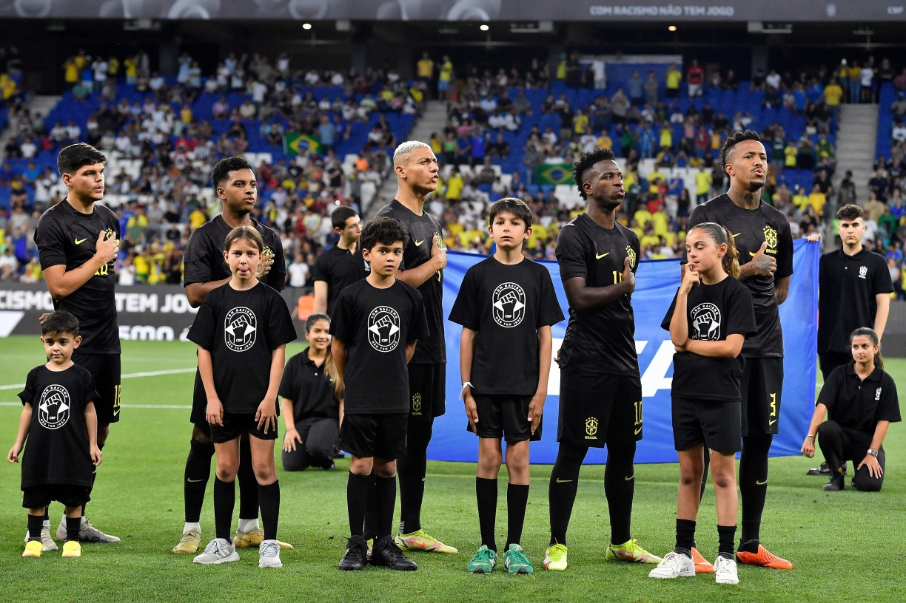

Vinicius Junior desabafa: "Vou até o fim contra os racistas. Mesmo que longe daqui"
Vinicius Junior desabafou nas redes sociais após ser vítima de racismo durante o jogo do Valencia contra o Real Madrid, pelo Campeonato Espanhol. Ele foi chamado de "macaco" por parte da torcida presente no estádio Mestalla, neste domingo, e ainda foi expulso nos acréscimos da partida.

A camisa preta é uma ação em combate ao racismo em protesto aos episódios envolvendo Vinícius Júnior, do Real Madrid, em jogos do Campeonato Espanhol neste ano. O brasileiro foi alvo de ofensas racistas em várias partidas. O modelo é preto, com escudo da CBF, números e nomes em amarelo.